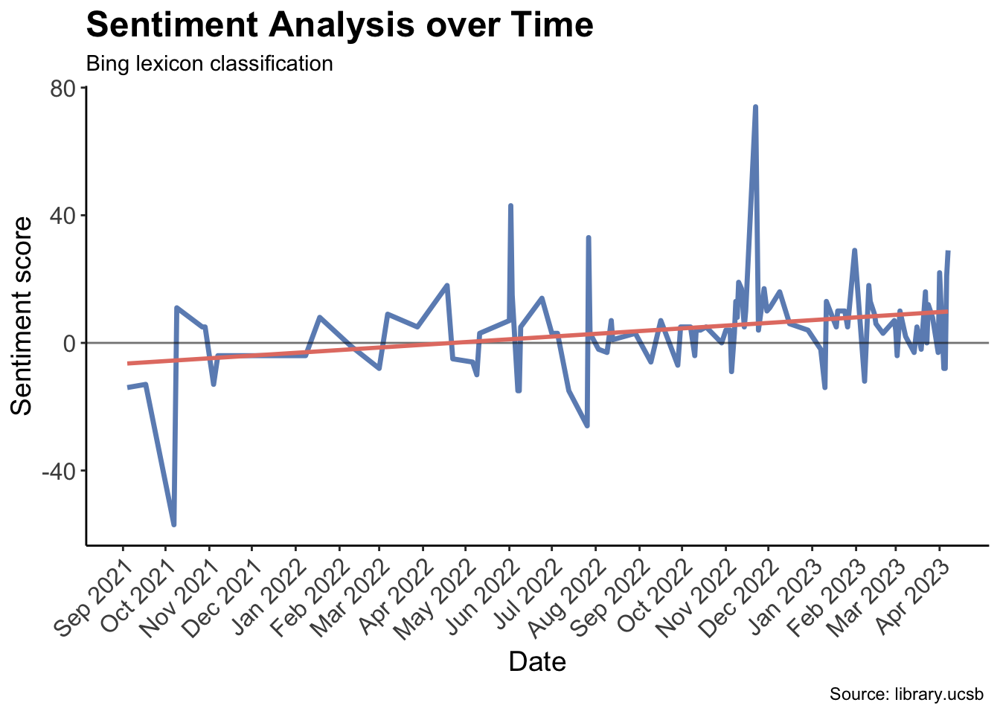

An investigation of the articles from the New York Times and the libraries of the University of California to examine the emotional tone associated with blue carbon trends, specifically investigating the impact on perceptions of environmental policies and government initiatives.
Sentiment analysis is a tool for assessing the mood of a piece of text. For example, we can use sentiment analysis to understand public perceptions of topics in environmental policy like energy, climate, and conservation. In this post we will access the Nexis Uni Database through the UCSB library https://www.library.ucsb.edu/research/db/211. Then we will choose a key search term or terms to define a set of articles.
In this lab, I will be exploring the words ‘blue cabron’ and ‘mangrove’. I am particularly interested in investigating the relationship between positivism and negativism as they relate to political and government initiatives in the environment.
Here is a link that takes you to the related articles from the University of California data base.
Use your search term along with appropriate filters to obtain and download a batch of at least 100 full text search results (.docx)
Part 1: Load the data
Read your Nexis article document into RStudio.
Now we will use the full text of the articles for the analysis. First clean any artifacts of the data collection process (hint: this type of thing should be removed: “Apr 04, 2022 (Biofuels Digest: http://www.biofuelsdigest.com/ Delivered by Newstex”))
It appears that the composition of the text is not being impacted by any artifacts in this particular section, so im going to leave the tibbles as they come.
Part 2: Explore and Clean
Lets explore your data a bit and replicate the analyses above presented in class (Lab2)
Show code
# The @ is for indexing within tibblesmeta_df <- text_dat@metaarticles_df <- text_dat@articlesparagraphs_df <- text_dat@paragraphsdat2 <-tibble(Date = meta_df$Date, Headline = meta_df$Headline, id = text_dat@articles$ID, text = text_dat@articles$Article)
Joining with `by = join_by(word)`
Joining with `by = join_by(word)`
Part 3: Score
Next, we will calculate the average sentiment score of words in the filtered articles using the stop_words and bing_sentiment datasets.
Show code
mean(sentiment_words$sent_num)
[1] 0.422933
Part 4: Statistic Analysis
Now lets calculate mean sentiment (by word polarity) across articles
Upon this analysis, it is evident that the average sentiment score per article (9.63) is considerably higher than that of words (0.43).
Part 5: Examination
Now, let’s examine the sentiment distribution of articles by plotting a graph, in order to visualize the proportion of positive and negative articles.
Show code
ggplot(sentiment_article, aes(x = id)) +geom_col(aes(y = positive, fill ="Positive"), alpha =0.8) +geom_col(aes(y = negative, fill ="Negative"), alpha =0.8) +labs(title ="Sentiment Analysis",subtitle ="Positive vs. negative articles",caption ="Articles related words: Blue Carbon/ Mangrove", y ="Sentiment Score",x ="ID of the Article",fill ="Sentiment") +scale_fill_manual(values =c("darkorange", "darkblue"), labels =c("Negative", "Positive"), name ="Sentiment")
Part 6: Plots on emotions
Now, lets look at the nrc contribution to emotion by word plots. Identify and reclassify or remove at least one term that gives misleading results in your context.
Show code
# Create a new data frame with the sentiments per word.word_sentiment <-get_sentiments("nrc") |>filter(word !="blue") #Remove the word blue because is misleading
Joining with `by = join_by(word)`
Warning in inner_join(group_by(anti_join(text_words, stop_words, by = "word"), : Detected an unexpected many-to-many relationship between `x` and `y`.
ℹ Row 8 of `x` matches multiple rows in `y`.
ℹ Row 9845 of `y` matches multiple rows in `x`.
ℹ If a many-to-many relationship is expected, set `relationship =
"many-to-many"` to silence this warning.
Part 7: Plots over time
Plot the amount of nrc emotion words as a percentage of all the emotion words used each day (aggregate text from articles published on the same day).
How does the distribution of emotion words change over time? Can you think of any reason this would be the case? Plot all the emotion word from the article. What percentage is for the emotion and how it changes over time.
Fun Fact: The NRC lexicon was created by selecting 10,000 words from a thesaurus and asking a set of five questions about each word to reveal associated emotions and polarity. Over 50,000 questions were asked to over 2,000 people on Amazon’s Mechanical Turk website, resulting in a comprehensive word-emotion lexicon for over 10,000 words. The Turkers were paid 4 cents for each set of properly answered questions.
Joining with `by = join_by(word)`
Joining with `by = join_by(word)`
Warning in inner_join(mutate(rename(inner_join(anti_join(mutate(select(text_words, : Detected an unexpected many-to-many relationship between `x` and `y`.
ℹ Row 7 of `x` matches multiple rows in `y`.
ℹ Row 9845 of `y` matches multiple rows in `x`.
ℹ If a many-to-many relationship is expected, set `relationship =
"many-to-many"` to silence this warning.
words_time %>%filter(date >=as.Date("2021-1-1")) |>group_by(date) %>%summarise(bing_num =sum(bing_num)) %>%ggplot(aes(x = date, y = bing_num)) +geom_line(color ="#6C8EBF", size =1.2) +geom_hline(yintercept =0, color ="gray10", size =0.5, alpha =0.6 ) +geom_smooth(method = lm, se =FALSE, color ="#E47E72") +labs(x ="Date", y ="Sentiment score", title ="Sentiment Analysis over Time", subtitle ="Bing lexicon classification", caption ="Source: library.ucsb ") +theme_classic() +theme(plot.title =element_text(face ="bold", size =18), axis.text =element_text(size =12), axis.title =element_text(size =14),axis.text.x =element_text(angle =45, vjust =1, hjust =1)) +scale_x_date(date_labels ="%b %Y", breaks =seq(as.Date("2021-01-01"), as.Date("2023-04-16"), by ="1 month"))
Warning: Using `size` aesthetic for lines was deprecated in ggplot2 3.4.0.
ℹ Please use `linewidth` instead.
`geom_smooth()` using formula = 'y ~ x'

This plot above shows the overall sentiment per day, based on sentiment analysis using the Bing lexicon classification method. The sentiment score is aggregated for each day by summing the scores of individual words analyzed that day, and the resulting plot shows the trend in sentiment over time. The x-axis shows the date range from January 1st, 2021 to April 16th, 2023, and the y-axis shows the sentiment score. The plot suggests that there have been fluctuations in sentiment over time, with both positive and negative trends observed during the period analyzed.
Show code
words_time |>filter(nrc %in%c("anticipation", "joy", "trust", "sadness", "anger", "disgust" ,"fear", "surprise")) |>group_by(date, nrc) |>summarise(word_appearance =n()) |>ungroup() |>group_by(date) |>mutate(tot_appearance =sum(word_appearance)) |>mutate(proportion = word_appearance/tot_appearance) |>ggplot(aes(x=date, y= proportion, color = nrc)) +geom_line(alpha =0.2) +geom_smooth(method ="loess",se = F,span =0.5,alpha =0.4) +labs(x ="Date", y ="Sentiment Proportion", color ="NRC Sentiment", title ="Sentiment Proportion over Time", subtitle ="NRC word classification", caption ="Source: library.ucsb ")
`summarise()` has grouped output by 'date'. You can override using the
`.groups` argument.
`geom_smooth()` using formula = 'y ~ x'
The plot above displays the distribution of NRC sentiments used over time, enabling an examination of any potential correlations. To enhance clarity, I have removed the postive, and negative sentiments, and used the geom_smooth() function to create trend lines that are easier to interpret. This is particularly useful due to the recent high influx of articles related to blue carbon, which can make the line graphs difficult to decipher. Nevertheless, I have made these lines transparent (alpha = 0.2) in the background to ensure that the trends remain visible. Upon analyzing the plot, two significant trends become apparent: surprise is consistently low, while trust and sadness are consistently high.
Below, you can see the total distribution of sentiments across our database.
Show code
# Compute the proportion of each categorynrc_proportions <- words_time %>%count(nrc) %>%mutate(proportion = n /sum(n))nrc_proportions %>%mutate(proportion =sprintf("%.2f%%", proportion *100)) %>%# Multiply by 100 and format as percentagekable(format ="html", align ="c") %>%kable_styling(full_width = F, bootstrap_options ="striped", position ="center", font_size =16)
nrc
n
proportion
anger
153
5.28%
anticipation
235
8.11%
disgust
104
3.59%
fear
188
6.49%
joy
264
9.11%
negative
514
17.74%
positive
780
26.92%
sadness
241
8.32%
surprise
69
2.38%
trust
349
12.05%
Show code
words_time %>%group_by(date, nrc) %>%summarise(appearance =n()) %>%group_by(nrc) %>%mutate(cum_appearance =cumsum(appearance)) %>%ungroup() %>%arrange(desc(cum_appearance)) |>ggplot(aes(x = date, y = cum_appearance, color = nrc)) +geom_line(alpha =0.8) +scale_color_manual(values = colors) +labs(x ="Date", y ="Cumulative Appearances", color ="NRC Sentiment", title ="Sentiment Cumulative Analysis over Time", subtitle ="NRC classification", caption ="Source: library.ucsb ")
`summarise()` has grouped output by 'date'. You can override using the
`.groups` argument.
In the above graph, I have calculated a cumulative score for each sentiment to gain insight into the overall trends of words and vibes used in the articles. This plot also highlights the high influx of articles in recent years. As anticipated, the positive and negative sentiments have the highest scores, but the positive line surpasses the negative line by a significant margin. Additionally, there are noteworthy correlations between certain words and the sentiments of trust, joy, and sadness, which have seen increased usage in recent times. Conversely, surprise and disgust are used less frequently, representing the less common sentiments.
Citation
BibTeX citation:
@online{patrón2023,
author = {Javier Patrón},
title = {Sentiment {Analysis} of {Blue} {Carbon} {Discourse}},
date = {2023-04-18},
url = {https://github.com/javipatron},
langid = {en}
}